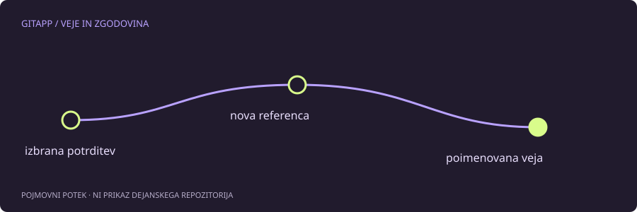

HEAD lahko kaže tudi neposredno na potrditev
Pri običajnem delu HEAD kaže na trenutno vejo, ta pa na potrditev. V ločenem stanju je izbrana potrditev neposredno, brez trenutne poimenovane veje. To se lahko zgodi pri pregledu starega stanja ali oznake in samo po sebi ni okvara repozitorija.
Če samo bereš datoteke ali preizkušaš staro različico, je takšno stanje lahko povsem namerno. Težava nastane, če ustvariš novo delo in potem odideš drugam, ne da bi mu zagotovil jasno referenco.
Najprej preveri, kje si
Uporabi pregledne ukaze:
git status
git branch --show-current
git log -1 --oneline --decoratePrazen izpis trenutne veje je lahko znak ločenega stanja. Celotno razlago potrdi git status. Ne sklepaj, da je terminal pokvarjen samo zato, ker namesto imena veje prikazuje identifikator.
Nova veja ohrani položaj
Če želiš novo delo na tem mestu nadaljevati na veji, je za še neobstoječe ime primer:
git switch -c ohranjeno-deloUkaz ustvari vejo na trenutnem položaju in preklopi nanjo. Če ime že obstaja, se ustavi in izberi drugo ime; ne dodajaj možnosti za prisilno ponastavitev obstoječe veje. Po uspehu preveri git status in zadnje potrditve.
Nova veja je referenca v istem repozitoriju. Ne pomeni neodvisne kopije diska in ne potrdi samodejno vseh lokalnih sprememb. Če imaš nepotrjeno vsebino, jo moraš še posebej pregledati in namerno shraniti.
Če si že odšel
Lokalni reflog lahko pomaga najti nedavne položaje HEAD. Ko prepoznaš pravo potrditev, ji lahko ustvariš poimenovano referenco. Najprej pa preveri vsebino z git show; podobno sporočilo še ni dokaz, da gre za pravo delo.
Takšna obnova ni zagotovljena. Lokalni zapisi in nedosegljivi objekti niso trajna varnostna kopija, poleg tega se vsebina, ki ni bila nikoli shranjena v Git, v zgodovini morda sploh ne pojavi.
Kaj ni treba narediti
Ni treba takoj združevati v glavno vejo, brisati starih vej ali izvajati trde ponastavitve. Najprej poimenuj in preveri delo, potem izberi, kam spada. Ločevanje ohranitve od vključevanja naredi postopek bolj razumljiv.
Pri sodelovanju preveri tudi, na kateri osnovi je novo delo nastalo. Veja iz stare oznake lahko potrebuje drugačno vključitev kot veja iz trenutnega razvoja. Ime veje samo po sebi ne pove ničesar o združljivosti njene vsebine.
Vir in obseg
Referenca: uradni priročnik za git-switch. Primeri so pripravljeni za učenje in niso opis posega v dejanski projekt. Preberi način preverjanja.